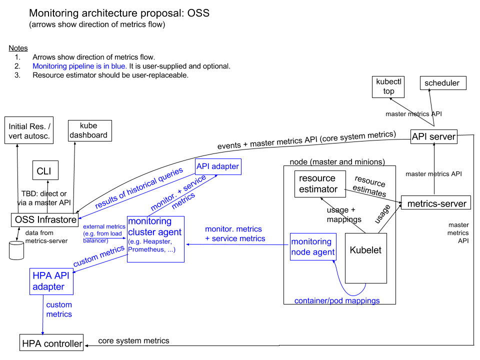

Metrics
从 v1.8 开始，资源使用情况的度量（如容器的 CPU 和内存使用）可以通过 Metrics API 获取。注意
- Metrics API 只可以查询当前的度量数据，并不保存历史数据
- Metrics API URI 为
/apis/metrics.k8s.io/，在 k8s.io/metrics 维护 - 必须部署
metrics-server才能使用该 API，metrics-server 通过调用 Kubelet Summary API 获取数据
Kubernetes 监控架构
Kubernetes 监控架构由以下两部分组成：
- 核心度量流程（下图黑色部分）：这是 Kubernetes 正常工作所需要的核心度量，从 Kubelet、cAdvisor 等获取度量数据，再由 metrics-server 提供给 Dashboard、HPA 控制器等使用。
- 监控流程（下图蓝色部分）：基于核心度量构建的监控流程，比如 Prometheus 可以从 metrics-server 获取核心度量，从其他数据源（如 Node Exporter 等）获取非核心度量，再基于它们构建监控告警系统。

开启API Aggregation
在部署 metrics-server 之前，需要在 kube-apiserver 中开启 API Aggregation，即增加以下配置
--requestheader-client-ca-file=/etc/kubernetes/certs/proxy-ca.crt
--proxy-client-cert-file=/etc/kubernetes/certs/proxy.crt
--proxy-client-key-file=/etc/kubernetes/certs/proxy.key
--requestheader-allowed-names=aggregator
--requestheader-extra-headers-prefix=X-Remote-Extra-
--requestheader-group-headers=X-Remote-Group
--requestheader-username-headers=X-Remote-User
如果kube-proxy没有在Master上面运行，还需要配置
--enable-aggregator-routing=true
部署 metrics-server
$ git clone https://github.com/kubernetes-incubator/metrics-server
$ cd metrics-server
$ kubectl create -f deploy/1.8+/
稍后就可以看到 metrics-server 运行起来：
kubectl -n kube-system get pods -l k8s-app=metrics-server
Metrics API
可以通过 kubectl proxy 来访问 Metrics API：
http://127.0.0.1:8001/apis/metrics.k8s.io/v1beta1/nodeshttp://127.0.0.1:8001/apis/metrics.k8s.io/v1beta1/nodes/<node-name>http://127.0.0.1:8001/apis/metrics.k8s.io/v1beta1/podshttp://127.0.0.1:8001/apis/metrics.k8s.io/v1beta1/namespace/<namespace-name>/pods/<pod-name>
也可以直接通过 kubectl 命令来访问这些 API，比如
kubectl get --raw /apis/metrics.k8s.io/v1beta1/nodeskubectl get --raw /apis/metrics.k8s.io/v1beta1/podskubectl get --raw /apis/metrics.k8s.io/v1beta1/nodes/<node-name>kubectl get --raw /apis/metrics.k8s.io/v1beta1/namespace/<namespace-name>/pods/<pod-name>
排错
如果发现 metrics-server Pod 无法正常启动，比如处于 CrashLoopBackOff 状态，并且 restartCount 在不停增加，则很有可能是其跟 kube-apiserver 通信有问题。查看该 Pod 的日志，可以发现
dial tcp 10.96.0.1:443: i/o timeout
解决方法是：
echo "ExecStartPost=/sbin/iptables -P FORWARD ACCEPT" >> /etc/systemd/system/docker.service.d/exec_start.conf
systemctl daemon-reload
systemctl restart docker